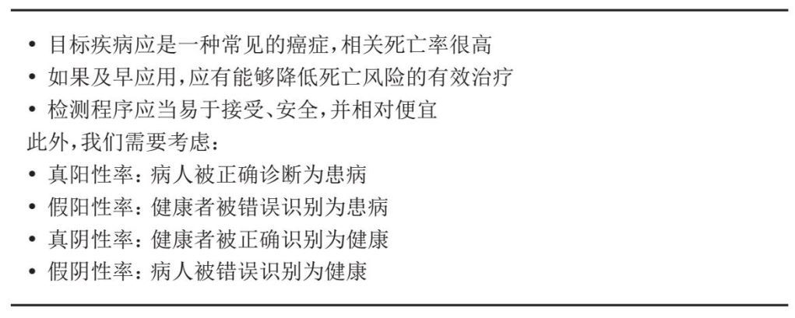
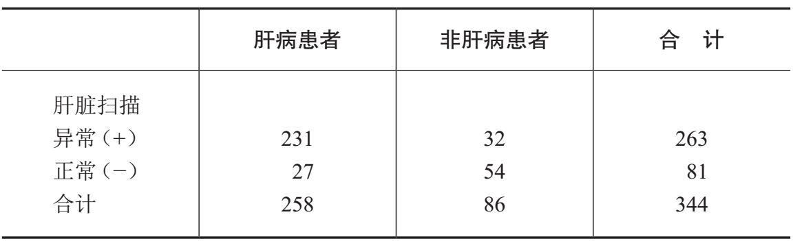
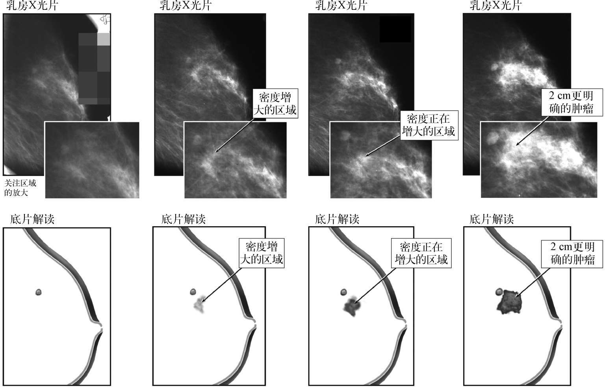
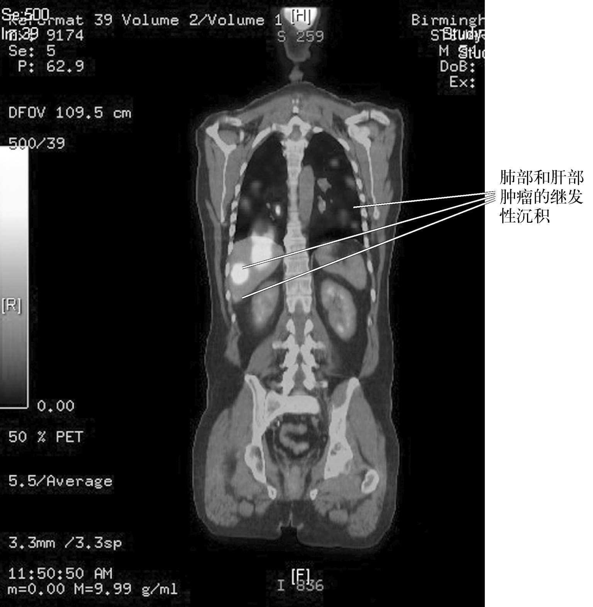
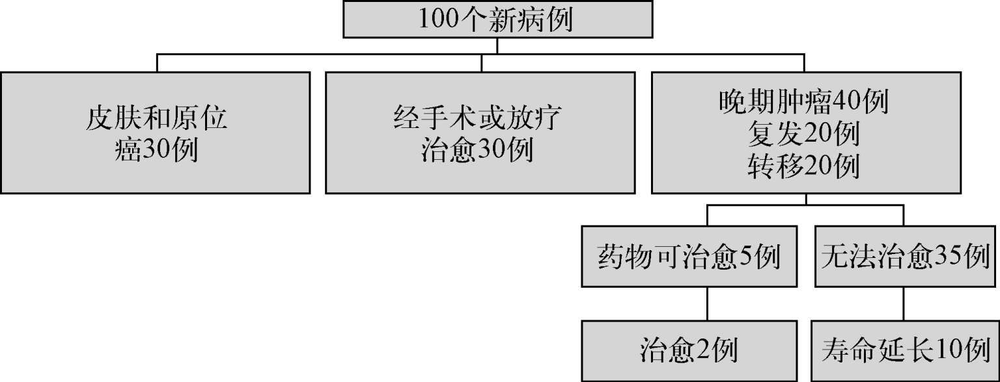
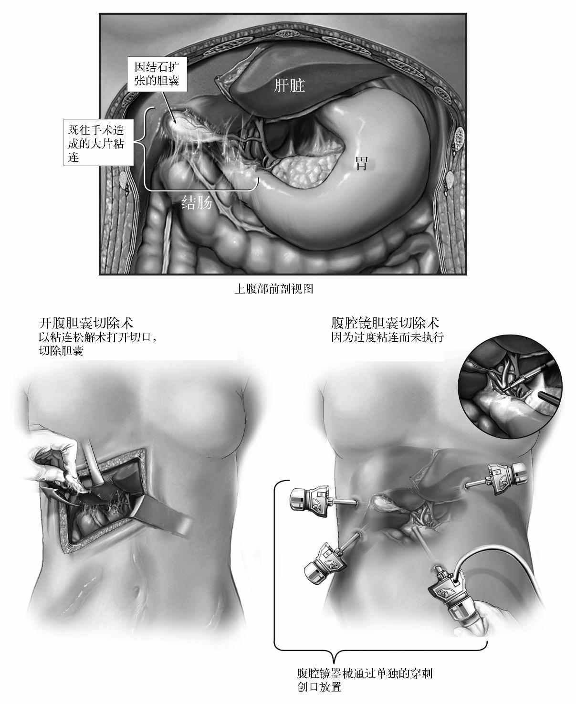
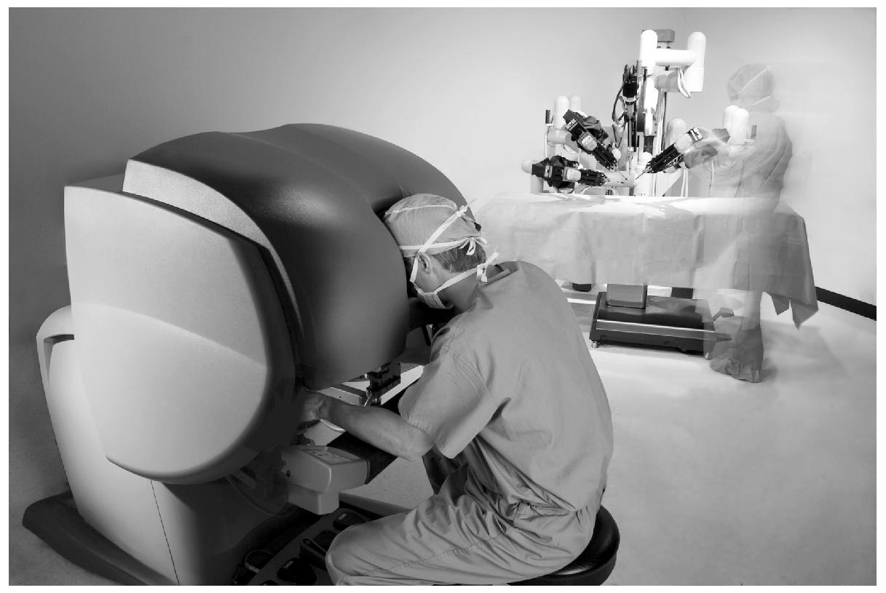
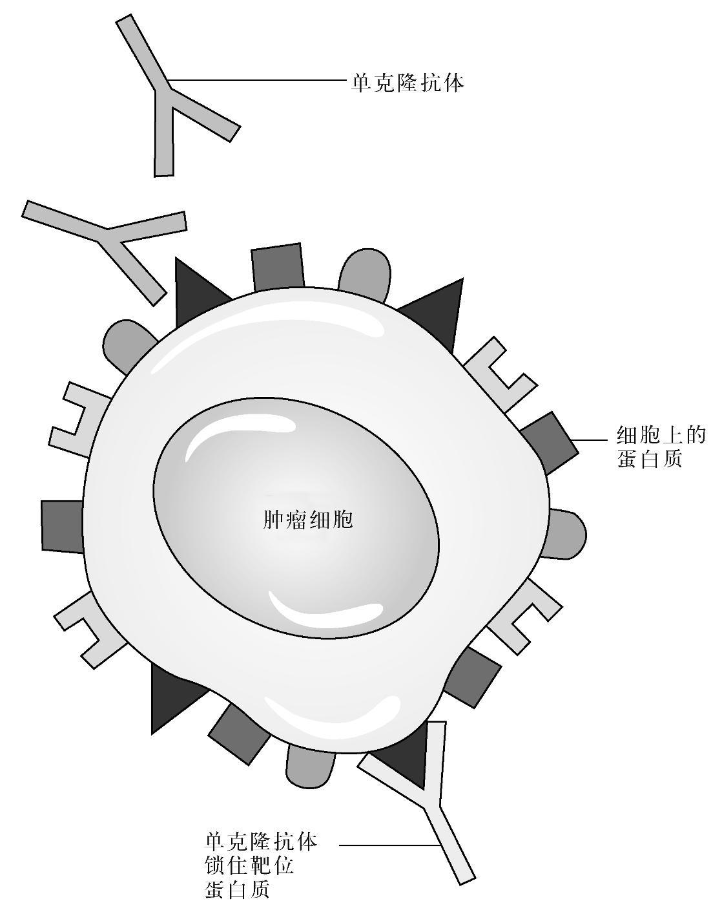

癌症的治疗非常复杂，通常需要很多不同群体的参与，这些群体有各式各样的医生，包括全科医生（家庭医生）、外科医生、肿瘤学家、病理学家、放射科医生、临终关怀专家，以及大批其他专门人才——护士、放射师、理疗师、实验室和放疗科的技术人员、手术室护理员等等，不胜枚举。如何将这些不同群体具体组织起来，各国之间差别巨大，也是各国医疗卫生的政治和经济职能。
为了解决这个问题，我会把癌症治疗的组织呈现为一个历程，从症状出现到诊断、治疗、复查，最后还有对那些癌症复发不治之人的临终关怀。不同的医疗卫生系统处理这些事件的方式各不相同，但总的来说，基本原则是普遍适用的。本章的最后一部分概述了诸如外科手术、化疗和放疗等主要的治疗类别。
初步诊断与调查
大多数患者主诉的仍然是诸如持续咳嗽等症状，或是尿血等问题。还有大量患者的问题是通过筛检计划查出的，要么是有组织有系统的筛检（例如乳腺癌和宫颈癌），要么是非正式的随机筛检（例如前列腺癌的PSA检查等）。有些病例是在调查其他问题时偶然发现的。例如，腹部扫描检查可能会发现肾脏的无症状肿瘤。后文中会再次讨论这些患者群体。
大多数患者会向医生描述他们自己注意到和担心的某种症状。虽然症状就像人一样五花八门，但通常可以分成两大类：一类是导致正常功能紊乱的异常症状，如会干扰正常行动的脑肿瘤；另一类是肿瘤造成损伤所导致的异常症状，如流血、疼痛或咳嗽。症状出现到确诊的时间可能非常短，有时也会达数年之久。诊断的延迟有时是因为卫生专业人士判断错误，有时是患者故意自我疏忽或自我欺骗，有时则是两者综合所致。
不出意料，错失早期诊断的时机，通常会在后来引发严重的医患关系问题，往往还是在最需要彼此配合的时候。在这方面，家庭医生就会遭遇很多麻烦。例如，头痛和背痛都是常见的症状，绝大多数病例的原因都是良性的，需要对症治疗而无须全面调查。当然，这些症状偶尔也会表明有潜在的脑部或脊柱肿瘤。
另一个例子是便血。每一个医学生都知道这可能说明有肠癌。每一个家庭医生也都知道，对于处在“有一定风险”年龄段的患者来说，存在痔疮（刺激之下，肛门底部会出血）等状况实际上是非常普遍的。那么，他们如何在不对患者进行严重的过度检查的情况下，区分无关紧要的便血和严重（但罕见）的便血呢？答案往往在医学院传授的另一项基本功里——准确记录病史的技艺。因此，像混合在排便之中的严重出血这样突然而意外的变化就更可能归因于癌症，卫生纸上常年可见的少量鲜血涂迹则不然。
癌症筛检
在理想的世界里，我们能够提供检查，在癌症进入严重阶段之前识别出来，从而进行早期干预，治愈的希望也大得多。这种过程被称为筛检，如今可以针对乳腺癌、子宫癌、宫颈癌以及肠癌等多种癌症进行。此外，PSA血检为测试是否患上前列腺癌的筛检，但它的使用仍存在争议。描述一种理想筛检的特征，继而考察这些检测在实践中的发展过程，有助于我们深入了解它们。
下面的例子就说明了这一点：
表1 一种理想筛检的特征（来源：世界卫生组织）

表2 肝脏扫描结果和正确诊断之间的关系

对于临床测试来说，这个结果相当不错——疑似肝病患者的阳性扫描结果是此病患者的一个相当好的指标，表明此人患有肝病。那么，作为一种筛检，这样的结果如何呢？
为了说明使用一种检查来诊断已知患病之人与在无症状人群中筛检疾病之间的差异，可以观察一下乳腺癌的数字。假设接受检查人群的漏检率（特异度）是10%，而未检出的早期疾病水平是500人中有一人。如果我们现在检查100 000个人，理想的检查会在癌症患者中得到200个阳性检测结果，在未患此病的人群中得到99 800个阴性检测结果。然而我们的检查固然很好，却并不完美，在这200个病例中只会检出180个，让其余的20人错误地放了心。另一方面，该检查也并非完全特异。假设95%的未患病人群得到阴性的检测结果，但有5%的人会得到错误的阳性检测结果。当我们把这种情况应用到筛检人口中，就意味着在未患此病的99 800人中间，有5%的人得到了错误的阳性结果。可以计算得出，在未患此病的人群中有4 990 个假阳性结果。这就是说，结果为阳性的人群中只有少数人（180/4 990 =4%）实际患有此病，而4 990 — 180 = 4 810个人都虚惊一场。此外，20个放错了心的人还会继续患有癌症，因为他们会认为自己没有患癌而忽视症状，可能在晚期才会检查出来。但是，取得阴性结果的绝大多数人（99 800人——超过99%）确实未患此病，因此，阴性的结果相当令人安心。
这些样例很重要，因为它们表明，筛检的局限性乍一看尚可接受。实际上，以上这些数字都是最佳 的结果——灵敏度和特异度在年轻女性中双双下降（大概是因为她们的乳房组织更加密实，难以看清异常的肿块），导致错误分类的病例增多。此外，尽管检查本身所费无几，追踪假阳性的成本却要高得多，需要将其计入筛检计划的成本。
在考虑筛检的好处时，还有另一个问题。在上面的例子中，与没有筛检的情况相比，我们会较早地识别出一些癌症病例，这很可能使得治疗前景有所改善。然而，乳腺癌的治愈率相当好，四分之三的确诊女性都是长期存活者。这样一来，余下的四分之一注定不成功的患者成为筛检的主要潜在受益人。与参加检查的人数相比，这部分人数相对较少，而缺点则是未患乳腺癌的健康女性的过度检查问题。
对疑似癌症的调查
无论患者是经过筛检计划识别出来的，还是向医生陈述了令人担忧的症状，接下来都是进行进一步的检查，以确定或排除诊断结果。诊断通常基于受影响器官的组织样本（活检），此前则是由医生进行临床检查、成像以及血检。理想情况下，使用无创成像检查便可调查癌症。实际上，几乎所有病例的诊断都需要通过在实验室检查组织样本来确认。成像是决定在哪里以及如何获得组织的关键。要么使用X光——计算机断层成像（CT）扫描，要么使用核磁共振成像（MRI），得到的现代截面成像可以给出内部器官和疑似肿瘤的非常精细的图片。然而，就连最好的成像都不能确切地表明某个团块是否就是肿瘤，就算在极有可能得出癌症诊断的情况下，也不能确切表明癌症的种类。在偶然情况下，成像足以说明问题。例如，一位终身重度吸烟的瘦弱老者，X光胸片表示有疑似肺癌，而此人又不适合任何治疗，如此便可省去确诊活检的不适了。还有一两种情况也无须活检——成像显示患者骨骼（前列腺癌扩散的常见位点）中有广泛的肿瘤沉积物，伴有血清前列腺特异抗原（PSA）水平大大升高，无须活检便能可靠地诊断为前列腺癌扩散。图例显示了乳房内的肿瘤标本扫描（图16）和肺脏与肝脏的继发性肿瘤病灶（图17）。在所有这些病例中，异常之处一目了然。但是，就算这些在放射学上明显的病变，一般也需要活检来确定癌症的具体类型，以及随后的恰当治疗。

图16 乳腺癌的乳房X光片

图17 患有晚期癌症并扩散到肺部和肝部的患者的CT/PET（正电子发射断层扫描）复合图像
病理科医生在癌症诊断中的作用
病理科医生评估的是少量的组织样本，比方说用采样针在活检中取得的样本。最初的材料偶尔可能来自手术切除的器官，例如在肾癌病例中，这种材料就可能来自患病的肾脏。通常是把移除肿瘤的非常薄的切片放在载片上，然后进行一系列染色，高亮显示引起关注的具体特点。随后，病理科医生便用显微镜检查染色的载片。苏木精——伊红（通常称作H＆E）是一种常用的染色剂，可以高亮显示细胞核等细胞组分。如今使用的染色剂越来越专门化，这有助于进一步突出肿瘤的特点。乳腺癌中雌激素受体的染色就是一例，有助于预测肿瘤对化疗和激素疗法的反应。可用的检查数目迅速增加，大多数都是基于单克隆抗体的（它们作为治疗的形式，其数量也在迅速增加——参见下文）。此外，为了寻找特定基因表达的变化，或是特定突变或染色体重排的存在，也都可以进行检查。
对于病理科医生而言，主要的问题是：“这是肿瘤吗？”如果答案是肯定的，那么接下来的问题包括具体的类型——换句话说，它始自哪个器官，以及它是什么亚型。此外，肿瘤是根据侵袭性分级的，通常从一级（低）到三级（高）。例如前列腺癌、淋巴瘤（淋巴腺的癌症），以及肉瘤（骨骼、肌肉或软骨等结缔组织和结构性组织的癌症）等癌症的分级系统不同，但原理是一样的。所有这些系统都基于肿瘤细胞的规模和形状，以及它们与始发器官的正常细胞相比有何差异。
近来越来越多的附加次级分类以肿瘤出现的分子标记物为基础。根据在肿瘤本身或血液循环（有时在尿液中也会出现）中特定标记的超标水平，它们可以被定义为标志性特征。分子标记物最广为人知的例子大概就是乳腺癌中的HER2了。1980年代末，洛杉矶加州大学的丹尼斯·斯莱门博士首次将其描述为乳腺癌和卵巢癌预后不佳的一个标记。这促成了药物曲妥珠单抗（赫赛汀）的研发，针对的就是这种蛋白质含量过高的细胞（术语称之为过度表达）。起初在患有晚期疾病的患者中间，后来又在新近确诊的患者中间进行的里程碑式的试验表明，该药物显著改善了25%的HER2蛋白质含量高的患癌女性的结果。因此，对HER2表达的肿瘤样本染色就能提供重要的预后信息，同时也有助于指导对治疗的选择。
病理科医生在癌症治疗中的另一个重要作用，是对来自手术切除的患癌器官的样本进行评估。上文提出的问题会以更大的样本重新评估，除此之外，病理科医生还要解决下列问题：
●肿瘤是否仅限于手术切除的器官？
●手术的切缘（样本的边缘）是否没有肿瘤的存在？
●是否扩散到关联结构，如淋巴腺？
治疗决策
完成活检和适当的成像之后，必须要对患者的治疗手段做出决策了。重要的初步决定是治愈是否可行。如果治疗基本上是为了减轻病痛，这必须在决策时加以考虑——生活质量就成为首要的目标。如果治疗有可能治愈，那么就要另外考虑了——研究表明，患者为了治愈付出的代价可能是忍受相当大的副作用。无论目标是治愈、延长生命，或是缓解症状，都有一系列手段可供使用，既可单独使用，也可以组合进行。决策需要定期复核，治疗也需根据副作用和肿瘤反应——也就是说，情况是否改善——来进行调整。
在各大卫生系统中，这些决策越来越不是由医生个人做出的，而是由通常缩写为MDT的多学科团队进行的（在当今的英国，如果医院要报销癌症治疗费用，就必须如此）。一般来说，这些团队会由外科医生、放射和肿瘤内科医生、放射科医生、病理科医生，以及专科护士组成。在与患者商讨评价各种检查结果之前，MDT会先行复核基准信息（术语称之为阶段信息）。大体而言，这些决策会根据国家或国际的最佳实践准则而定。然后会在诊所与患者讨论结果和治疗选择，最终确定临床方案。
我们会依次介绍不同的治疗模式，但在开始之前，对治疗模式的相对重要性做一个大概的分类，或许会有所裨益。图18预测了100位“普通”患者在现代西方医疗系统中的治疗模式。显然，这些数字只是供说明之用，各国情况不同，甚至在有着地方惯例的同一个国家里也不尽相同。例如，治疗膀胱癌既可以通过外科手术摘除膀胱（膀胱切除术），也可通过放疗破坏肿瘤，外科手术可以作为放疗失败的后备补救方案。在美国，很少有患者在可选的情况下接受放疗，后者通常是保留给老弱病患做缓解治疗的（控制症状）。相反，在英国，大约有三分之二的患者主要接受放疗，而手术主要针对更合适的年轻患者。这种主流做法上的差异主要源自英美卫生业的差别（参见第五章），而不是任何基于证据的差别。

图18 癌症治疗在不同治疗模式上的分布
分布比例背后的基本原则是，大约30%的病例只是非常局部的侵袭——如基底皮肤癌（通常称作侵蚀性溃疡）——只需要非常有限的局部治疗，一般采用手术，但偶尔也会采取放疗。在余下的病例中，大约有40%的患者的肿瘤会广泛扩散，还有30%患有局部晚期肿瘤，可以通过手术或放疗等局部/区域性治疗予以根除。如前所示，精确的分布比例各不相同，部分是地理原因，但也因解剖部位的变化而不同。例如，手术是治疗肠癌的最佳手段，而不是放疗，因为正常的大肠对放疗的耐受度相对较差，何况以活动结构为靶向显然问题重重。另一方面，如今宫颈癌的主要治疗手段是放疗结合同步进行的化疗，并把手术作为后备的补救方案。另外，评估该病是否造成了局部扩散也起到了有限的作用。
在癌症发展进入晚期的患者中，大约有半数从一开始便体现出这一点，另外半数开始时患有明显的局部疾病，但随后旧病复发，问题广泛扩散。在晚期（一般称为转移性）的癌症患者中，大多数人患上的基本上都是不治之症。这些疾病像晚期的肺癌、肠癌、乳腺癌、前列腺癌或肝癌，都是主要的癌症杀手。少部分患者的疾病有可能通过化疗治愈，例如睾丸癌、淋巴瘤、白血病，或某些儿童癌症。
从这样的分类中可以看到，21世纪治愈的大多数患者都是按照起初在19世纪发展起来的模式来治疗的——外科手术和放射疗法。推动众多新闻头条的主要药物治疗进展始自20世纪中期，大部分药物延长了晚期患者的生命，而没有真正治愈他们。公共卫生领域的医生们熟知这一事实，大众却对此不甚满意。由此可知，在比较贫困的国家，只有实施良好的基础外科手术和放疗才会取得对癌症的最大影响。直肠癌在全世界的存活率就最好地证明了这一点。古巴治疗该病取得的结果最佳，众所周知，该国的医疗护理组织相当完善，但它获得更加昂贵的新药的途径却非常有限。在资源有限的地区，癌症化疗最好集中关注儿童白血病和睾丸癌等罕见的化疗可治愈的癌症。因为这些癌症主要发生于年轻人群，在这一领域的药物支出对于所拯救的生命年限的影响要高得多，远非拯救老年患者的临终癌症药物支出可比。老年人的晚期疾病药物疗法，对治愈率的影响往往要小得多。就算治愈属寻常之事，患者本身已届老龄，无论怎样，其预期寿命都更加有限。第五章将会详细讨论这个主题。
外科手术
外科手术显然有上千年的历史了，但癌症手术的时代实际上可以追溯到19世纪中期有效麻醉的出现，外科手术由此从孤注一掷、“鲜血淋漓”的可怕的紧急截肢，发展成为可受控制的解剖。如上所述，移除肿瘤的手术是癌症治疗的支柱之一（此外还有放疗），尽管药物治疗已有进步，在可预见的未来，情况似乎仍然如此。外科医生在日益发展微创（常被称为锁眼）手术技术，无需大切口便可进行。这些手术的优势是术后恢复迅速，但的确增加了手术次数，技术难度也增加了。因为恢复时间较短，这些技术使得老弱患者可以接受手术。还因为恢复期的痛苦较少以及完全恢复正常功能的康复期较短，它们对所有患者群体都更具吸引力。与此相反，用金属长管进行手术，并用一种改良的望远镜进行窥视被比喻为用筷子系鞋带，这使得开刀手术的支持者声称，关键的癌症治疗效果可能会打折扣——例如肿瘤的完整移除。对这方面治疗的评估由病理科医生完成——那可是癌症团队的关键成员。

图19 开放式与腹腔镜胆囊切除术的对比
微创手术近来的进展是机器人辅助过程。在机器人手术中，手术器械是人工插入的，随后便固定在机器臂上。插入观察孔后，外科医生就在与患者隔离的控制台上操作——基本上是使用计算机游戏技术来远程操纵器械。这种激动人心的技术也有潜在的缺点，例如，机器人器械的设置比直接操纵“微创”器械耗时还长。另外，机器本身要价100万英镑左右，每年还需大约15万英镑的运营费用。这是一笔相当大的额外开支，远远超出了手术室、病房、麻醉科等部门的一般基础设施的全部费用。这种技术最终是否既能取得临床效果，又具备成本效益，显然还有待观察。当然，美国如今对机器人手术有着非常强烈的消费者/患者需求，或许最终能战胜冷酷的临床考虑。

图20 机器人辅助的外科手术
放射疗法
放射疗法是19世纪的另一项技术，其势头在21世纪依然强劲。1895年，伦琴的重要观察为现代放射疗法奠定了基础。他发现，当朝着真空里的一个目标发射电子时，产生了不可见的光线（他称之为“X光”）——这些光线能让感光胶片变黑。人们很快意识到，X光传递了能量，而这种能量有望用于治疗和成像。短短数月后，第一批皮肤肿瘤患者就得到了治疗，创新的速度惊心动魄。成像和治疗的技术在过去一个多世纪里逐渐完善提高，如今已经是现代癌症疗法的关键组成部分。的确，如前所述，现代癌症疗法最有效的部分仍是外科手术和放射疗法，外加在治愈率方面相对次要的药物治疗。在富裕的第一世界国家，药物治疗得到的资金支持显然远超这两种关键的核心疗法。然而，比较贫穷的国家不得不做出艰难的选择，与外科手术和放射疗法相比，鲜有药物可以在治疗方面提供出色的性价比。
在对电生成或使用放射性同位素产生的X光效果进行初步观察之后，这种技术逐步得到了完善。起初的技术是基于伦琴在19世纪描述的真空管，它能发射穿透到内脏的光束，但在皮肤附近沉积了极大剂量。1950年代，更加强大的所谓兆伏机面世了。这些机器使用的是人工同位素钴—60，现在已被所谓直线加速器（一般简写为linac）这种电气设备所取代。后一种机器使用了二战时为雷达研发的磁控阀。脉冲可以以高得多的能量把电子“轰”进靶位，治疗深部肿瘤的性能好得多——仿佛是高科技刀剑上的电子犁刃。
通过用细部成像来整合治疗的实施，现代放疗可以做到非常精确的定位。副作用有两方面。在皮肤、消化道内膜和口腔等结构，效果可比晒伤，严重程度取决于吸收的剂量。感受的效果取决于治疗的部位，可能会包括低位肠道治疗引发的腹泻，或口疮、脱发，以及接受治疗的皮肤部位变红等等。第二组副作用体现在肺脏和肾脏等实体结构上。对这些器官的治疗几乎没有即时的效果，但如果超过了临界剂量限制，被照射的组织会逐渐失能。因此，靶位肿瘤附近的重要器官接受的剂量就成了放疗实施的关键限制——为了治疗癌症，一定量的毒性是值得接受的，但显然存在一个破坏大于收益的临界点。调强放疗（IMRT）等改善的放疗专注于非常复杂的计量配比，看起来在重要的结构周围“改变”了剂量，其应用越来越普遍，但实施的成本和复杂度也随之上升。一项有关的发展是治疗机器的板载成像，它可以被用来实施图像引导放疗（IGRT），其中治疗能够每天跟踪肿瘤的移动。IMRT与IGRT的组合有望既能（通过确保治疗射中靶位）提高对肿瘤的控制，又能更好地绕过不相关的组织，从而降低副作用。
激素疗法
尽管如今化疗在癌症药物疗法中占据主导地位，但首个成功的癌症治疗药物却是一种基于激素的药物疗法。癌症的激素疗法可以追溯到1940年代，来自美国泌尿科医生查尔斯·哈金斯在晚期前列腺癌患者身上的发现。
激素疗法的先驱们推断，如果“母本”组织需要正常的激素水平，那么来自组织的异常肿瘤或许也保留了这种依赖性。在晚期前列腺癌患者身上所做的去势试验产生了惊人的结果，骨骼中的癌症病灶所引起的疼痛等症状得到了迅速而显著的改善。此后，医生尝试使用了当然会抑制雄性特征的雌激素，再次获得了惊人结果。可惜的是，这些激素的效果尽管显著，却只能维持一两年，随后疾病就会复发。患有乳腺癌的绝经期前女性，在切除卵巢后也观察到了类似的结果。后来的几十年里，出现了各种具体针对前列腺癌和乳腺癌的基于激素的药物疗法。其中一种药物，即雌激素阻滞剂他莫昔芬，挽救的生命大概比其他任何抗癌药物都多。半个多世纪过去了，针对激素路径的新药仍在临床上不断出现。
化学疗法
如果请大众说出与癌症治疗关系最密切的药物种类，他们一定会说是化疗。这个术语涵盖大量不同的药剂，来源十分广泛，从抗生素到植物提取物，再到基于DNA人工合成的化学制剂。所有这些药物都会干预细胞分裂的机制，并且由于很多组织都有正在分裂的细胞，因而会导致恶心与呕吐（一部分原因是消化道内膜遭到破坏，另一部分原因是大脑受到了直接影响）、脱发（对毛囊的破坏）等典型的副作用，以及感染的风险（抵御感染所需的白细胞的产生遭到了破坏）。我们都十分熟悉（用通俗小报的说法是）与癌症“作战”的光头患者的形象。虽说化疗中的确会发生这种情形，实际情况却更加多样，在门诊条件下实施的很多化疗几乎不会造成恶心或脱发。脱发很难预防，但它并非所有化疗药物的统一特性。如今，恶心与呕吐在很大程度上都可以预防，这样患者就可以服用迄今被认为毒性过大的药物，就连上了年纪的患者也一样。这非常重要，因为很多化疗都是为了缓解症状，因而生活质量是重中之重。如果生活质量很差，延长生命就没有什么意义了。
第一批化疗药物是基于从芥子气中取得的化学物质研制的，芥子气曾在第一次世界大战期间被广泛使用，效果相当恐怖。据说，接触过这些药剂的士兵生还后会出现白细胞（血液中负责抵御感染的细胞）数量下降的情况。当然也有人患上了一种白细胞的癌症，也就是通常所谓的白血病。人们用氮芥等芥子气衍生物，在白血病和一种叫作淋巴瘤的次级相关组的癌症上进行了很多试验。这些试验中的患者第一次体验到一些状况减轻了，这些状况在此前根本无法治疗。不幸的是，在单独用药的情况下，状况的缓解只是暂时的。但试验证明，进一步用药之后，这些药物组合使用最终可能会治愈白血病和淋巴瘤患者。
随后出现了一波新的化疗药物，在1970年代和1980年代，人们普遍认为这些药物会继而促成针对大多数晚期癌症的治愈疗法。这些药物的来源多种多样。植物提取物（长春新碱、多西他赛、紫杉醇）、络合重金属（顺铂、卡铂），以及抗生素（阿霉素、丝裂霉素）等被证明是卓有成效的探索领域，带来了多个大规模实验室筛检计划，在大量的植物和细菌提取物中寻找有希望的化学药物。另一个探索领域是从DNA或细胞分裂过程的其他构件中取得的化合物，最佳的例子就是RNA的组分之一（见第二章）、尿嘧啶的衍生物——5—氟尿嘧啶（5FU）。分子中额外的氟原子让5FU得以与DNA和RNA发生作用，却无法被正常加工——在此过程中相当于一个分子“扳手”。
1970年代和1980年代取得了进一步的显著成功，特别是晚期睾丸癌，从一种致命疾病变成了一种高治愈率的病症。如此巨大成功的最好说明，就是环法自行车赛冠军七度获得者兰斯·阿姆斯特朗，他被确诊患上了广泛扩散的疾病，连大脑也被侵袭了。大量化疗取得成功后，他继续参赛，赢得了他的第一个环法赛冠军，其后又是打破纪录的六次夺冠。各种白血病和很多儿童癌症上也见证了类似的成功。然而不幸的是，主要的癌症杀手更耐化疗，虽说大多数肿瘤类型都会在一定程度上对化疗有所反应，这些癌症却难以治愈。有人认为，问题或许在于化疗的药物没有给到足够的剂量。但是，1990年代的一轮试验表明，就算极大剂量的化疗药物组合加上骨髓移植，也无法治愈晚期乳腺癌等主要杀手。
这一认识引发了研究重点的变化。晚期疾病尽管无法治愈，却会在一段时间内对化疗作出反应，这一观察促使人们在早期疾病的环境下测试化学疗法，就像以前在激素疗法中的做法一样。我们知道，很多无明显疾病的患者后来却出现了复发。这表明一定有非常少量的肿瘤潜伏下来未被发现。研究者假定，在早期实施化疗可能比等检测到复发再做化疗的效果要好。初步试验的结果令人失望，但事后发现，这只是因为成效过小，难以察觉。当乳腺癌的试验结果汇集起来，人们认识到早期化疗是有效的，与把化疗作为“补救”治疗的人相比，接受早期化疗的女性复发间隔和存活时间都较长。这叫作辅助疗法，其根据是所谓的“微转移”疾病可以根除的原理，而一旦扫描可见，疾病便无法治愈了。现代的扫描仪器尽管非常灵敏，却基本上无法检测出直径小于数毫米的肿瘤。因此，我们无法区分哪些是首次手术或化疗便已治愈的人，哪些是扫描显示正常，但实际上藏有少量残留的肿瘤病灶、未来注定会导致复发的人。后续研究改进了使用的药物组合，也改善了获益最多的女性群体的状况。辅助疗法的问题在于，很多女性只接受外科手术和放疗就已取得了不错的效果，因而化疗对她们没有任何好处，只有毒性和潜在的伤害。这种风险对疾病复发风险最低的人是最高的，无论复发风险低是源于疾病的侵袭性较低，还是源于死于其他原因的风险较高（例如非常年迈的人）。
近来，人们更加重视化疗对于症状缓解所起的作用。这看似矛盾——施用有毒的药物来减少痛苦。然而，症状控制的改善，特别是使用药物防止此前与化疗相伴的严重恶心，改变了这些缓解药物的价值。生存时限的提高往往相对适度——通常只有数月，这使得研究人员研发了衡量生命质量的方法。如此，就能在产生益处（例如减轻痛苦）的有毒药物和常常被总称为“最佳支持治疗”的替代药物（止痛药、放疗，诸如此类）之间进行比较了。
辅助和缓解这两个使用趋势，大大增加了发达世界的癌症药物费用（见第五章），尽管收益相对较小，获益之人的数目却极为可观，因此如今相对年长的癌症患者也开始广泛使用化疗了。
单克隆抗体
抗体是动物体免疫防御的关键组成部分。每个抗体都由一个恒定区和一个可变区组成。可变区负责把抗体与其目标结合起来，如图21所示。抗体的正常功能是与入侵的感染有机体（病毒、细菌等）结合。接触到新的感染有机体后，机体的白细胞将其识别出来，并选择最能粘住入侵者并令其失能的具有抗体可变区的细胞（称作淋巴细胞）。相关细胞的生产大幅增加，随之增加了能够与入侵者结合的抗体的产量。一旦结合，其他的免疫细胞就将抗体的恒定区作为把它们拉出体循环的“钩子”，识别出抗体包覆的入侵者并吞噬它们。免疫系统的进化是复杂多细胞有机体生存所必需的关键演化步骤之一。免疫系统天生有缺陷的人很难在儿童时期存活下来，彰显了这个功能的重要性。
1970年代，技术得到了发展，可以通过制造与肿瘤细胞等“人造”目标相拮抗的抗体来利用免疫系统的能力。这些人工设计的靶向抗体被称作单克隆抗体——由单一的细胞克隆而来的抗体——可以粘在几乎任何被选中的靶位上。通过选择肿瘤细胞上的靶位，这些天然的分子既可通过连接放射性化学物质来帮助成像，又可直接凭借自身能力进行治疗。
当单克隆抗体首次面世时，人们以为它将成为“灵丹妙药”，可以为每一种肿瘤量身定制，从而根除晚期癌症。很遗憾，事实没有那么戏剧化，不过30年后，如今有越来越多的单克隆抗体投入了临床应用。
最广为人知的单克隆抗体大概就是曲妥珠单抗了，它更常用的名字是商品名赫赛汀。这种药物以肿瘤细胞表面上一种名为HER2的蛋白质为攻击对象，后者是被称为生长因子受体的一族蛋白质的成员。最好将它们想象成由循环蛋白（在本例中称作调蛋白）所调节的开关。大约有三分之一的乳腺肿瘤细胞表面有一种形式异常的HER2，基本上会导致开关被永久地“打开”了。HER2呈阳性的乳房肿瘤比HER2阴性的肿瘤生长得更快，也更具侵袭性。因此，以细胞表面的HER2为靶子似乎是个合乎逻辑的策略，而单克隆抗体则是实现该策略的妙法。起初的研究在患有HER2阳性肿瘤的女性中进行，并确认行之有效，该药物在2002年获得了批准。结果虽然是好的，可以观察到肿瘤缩小了，却不像期待的那样激动人心。尽管如此，人们认为进一步的试验值得一试，这一次将赫赛汀与化疗联合用于治疗晚期疾病。这些试验产生了更加惊人的结果，与那些只接受化疗的人相比，接受赫赛汀治疗的女性存活时间延长了大约50%。

图21 附着在肿瘤细胞上的单克隆抗体简图
下一阶段的研发结果更有趣。在证明了对不治之症的益处之后，下一个步骤就是在处于有望治愈阶段的早期患者中测试该药物，这种策略在激素疗法和化疗中已经取得了成功。赫赛汀辅助试验取得了肿瘤学上的成功，复发风险减半，某些此前无法治愈的女性也出现了被真正治愈的可能。但其中暗藏陷阱。患有HER2阳性的早期乳腺癌的大多数女性实际上只需接受手术、放疗和化疗，前景便已一片光明。如果一位女性已经通过这些治疗而痊愈了，她显然不会从任何进一步的治疗中获益（实际上还有可能受到伤害，因为赫赛汀带有导致心脏病的风险）。
反过来，即便接受了当前所有的疗法，有些女性仍会死亡，因此她们的获益也相对很少。处于两者之间的才是真正的赢家：原本注定会旧病复发，现在却有可能痊愈。这意味着在辅助（预防性）的环境中，需要很多人接受治疗，才能使一个真正的赢家受益，比例可能会高达20:1。因为赫赛汀的价格很高（每年大约30 000英镑），每拯救一位女性的有效成本预计便达20×30 000 = 600 000英镑左右。因此当这种药物获批用于辅助治疗时，新一轮激烈的争论随之而来，也就不足为奇了——为了挽救一个生命，花费多少钱才是合理的？
靶向分子疗法
DNA革命和整个人类基因组的测序一直承诺其裨益会带来更好的药物。随着越来越多的基因被克隆，为异于正常细胞的肿瘤细胞基因绘制图谱指日可待。一旦识别了某个关键基因，随后便可设计出药物以这种异常基因为目标，或者更准确地说，以其关联的蛋白质产物为靶子。如上所述，靶向疗法的一种方式是使用抗体。另一种方式如今促成了大量新药问世，那就是制造干预功能的化学物质，无论干预的是异常蛋白质本身的功能，还是细胞中同一路径上某个其他部分的功能。前一种策略的第一个或许也是最好的例子，就是白血病药物伊马替尼（格列卫）。长期以来人们一直认为，一种名为慢性淋巴细胞白血病（CLL）的疾病的特征是存在所谓的“费城染色体”。这种异常的染色体来自两个不同染色体的融合，结果就产生了一种来自两种不同基因的异常蛋白质——bcr—abl融合蛋白质。详细的分子生物学研究证明，bcr—abl是驱动CLL细胞的必要和充分条件（这是研发候选新药的关键条件），使其成为理想的靶子。伊马替尼是成功命中目标的第一种药物，它改变了CLL的预后，那些已经对前期使用的化疗药物产生耐药性的患者的缓解期延长了。但不幸的是，尽管缓解期有所延长，却并非永久性的——肿瘤细胞最终还是会耐药。这是靶向小分子疗法的一个特点——它们往往非常有效，与化疗相比副作用较低，但一般不会治愈。然而，如我们在化学疗法一节中谈到白血病时提到的，初次单独使用这些药物也只会缓解而非治愈，所以希望组合使用能够证明同样是有利的。时间会证明一切。
靶向疗法的第二种做法是瞄准与“核心”异常有关联的路径。这种做法的最佳范例是肾癌疗法近来的转变。直到最近，晚期肾癌几乎还是无法治愈，只有干扰素和白细胞介素—2这两种药物获批上市，药效都非常有限。大多数肾癌的发生都是“自发性”的，也就是说，家族其他成员不会患上同一种癌症。人们在多年前就已经观察到，家族成员长出相同肿瘤是非常罕见的，往往在幼年就发生了——见第二章关于遗传性癌症的章节。冯希佩尔和林道描述过这样一种遗传性综合征，该综合征如今就以他们的名字命名。作为疾病的一部分，冯希佩尔—林道（VHL）综合征患者会发展出多种早期肾癌。在微观层面上，VHL的各种癌症与更加常见的非遗传性癌症很相似，因此，人们怀疑VHL基因的异常情况或许在自发性癌症中也存在，事实证明的确如此。然而，VHL综合征患者的问题在于VHL蛋白质的正常功能缺失了 ；因此，以VHL蛋白质本身为靶子只会让问题变得更糟。对VHL路径的研究表明，VHL功能低下的一个结果是，通常受到VHL蛋白质抑制的各种蛋白质变得过度活跃了。其中包括驱动细胞分裂的蛋白质，以及另一族推动新血管产生的分子。以这条路径上失灵的VHL蛋白质的上游或下游成员为目标的药物被研发出来，其中包括三种小分子疗法，即舒尼替尼、索拉非尼和替西罗莫司，以及一种名为贝伐珠单抗的单克隆抗体。
这些药物的试验引发了晚期肾癌治疗的革命，自2006年以来，四种药物均获得了批准，还有一系列新的药物正在走向临床。然而，就像CLL一样，虽然大的晚期肿瘤首次缩小了，但这些药物在大多数病例中并不能治愈，耐药性也会随时间而不断升高。如今的试验重点关注辅助疗法、测序和组合施药，希望能够实现更大的存活收益。
与上文赫赛汀的故事一样，这些药物高昂的成本引起了巨大的争议——患者需要持续治疗而不是被施以有限的疗程，如同以前化疗等疗法的常规做法。药物非常昂贵——每年的治疗需要25 000到30 000英镑——获取药物的手段也会随之发生变化（见第五章）。然而，与赫赛汀和乳腺癌不同，加拿大、澳大利亚、苏格兰和英格兰等国的采购当局对呼声不断的女性乳腺癌游说的反应相当积极，却对资助一群以老年男性患者为主的群体接受治疗较为抵触。
用于控制症状的药物
在过去的10到15年里，一系列支持性治疗药物尽管不能直接治疗癌症，却也促成了癌症治疗的巨大进步。上文已经提到过得到改善的抗恶心药物。同样与化疗的安全性和实施有关的是生长因子，特别是可以提高白细胞数量、降低感染风险的粒细胞集落刺激因子（G—CSF）。第二个有关的产物名为GM—CSF（粒细胞—巨噬细胞集落刺激因子），起初是为同样的目的而研发的，后来却证明在把名为干细胞的血细胞前体释放到循环系统中起到了很有价值的作用。这种有些深奥难解的观察，使得专业人员可以在实施旨在破坏正常骨髓的高剂量化疗之前，先行采集干细胞。此前患者需要进行骨髓移植以在接受此种治疗前“拯救”他们，但结果证明，采集到的干细胞也能达到同样的效果，速度却更快，治疗前的采集过程也要容易得多，从而扩大了适合接受这些高剂量疗法的患者群。
近来研究的另一个领域是骨保护剂。很多扩散到骨骼的肿瘤都有着毁灭性的后果，包括疼痛、骨折，以及脊柱损伤所致的瘫痪。研究表明，一个悖论是，身体对肿瘤的“过度反应”会导致损伤增加。起初为骨质疏松症研发的药物结果却可以减少这种附加的自残性损伤。最初可用的药物如氯膦酸盐的效价相对较低，但后来的唑来膦酸和伊班膦酸等药物，其效价要高很多倍，可以大幅降低晚期肿瘤患者的骨损伤。更有趣的是，在高风险乳腺癌的辅助试验中，唑来膦酸似乎也减少了软组织疾病，表明这些药剂或许还有直接的抗癌性质。
结语
100年来，癌症治疗取得了巨大进步，改变了全世界数百万人的治疗结果。与50年前或100年前相比，21世纪初的癌症治疗更加安全、高效，毒性也更低。手术和放疗仍在不断改进和提高，更好的靶向和微创技术也越来越多。辅助成像和病理学服务也会继续改善，未来会有更好的治疗选择。药物的种类及其有效性正在迅速增加，这将会在未来数年里带来更大的进步。就像我们要在第五章讨论的那样，所有这些进展的主要问题在于成本的飙升，但应对这个问题总好过毫无选择。